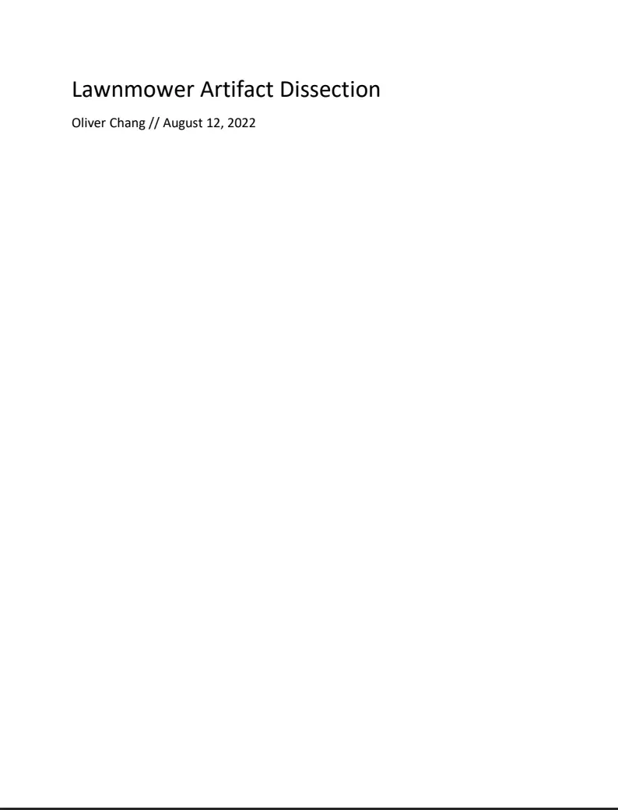
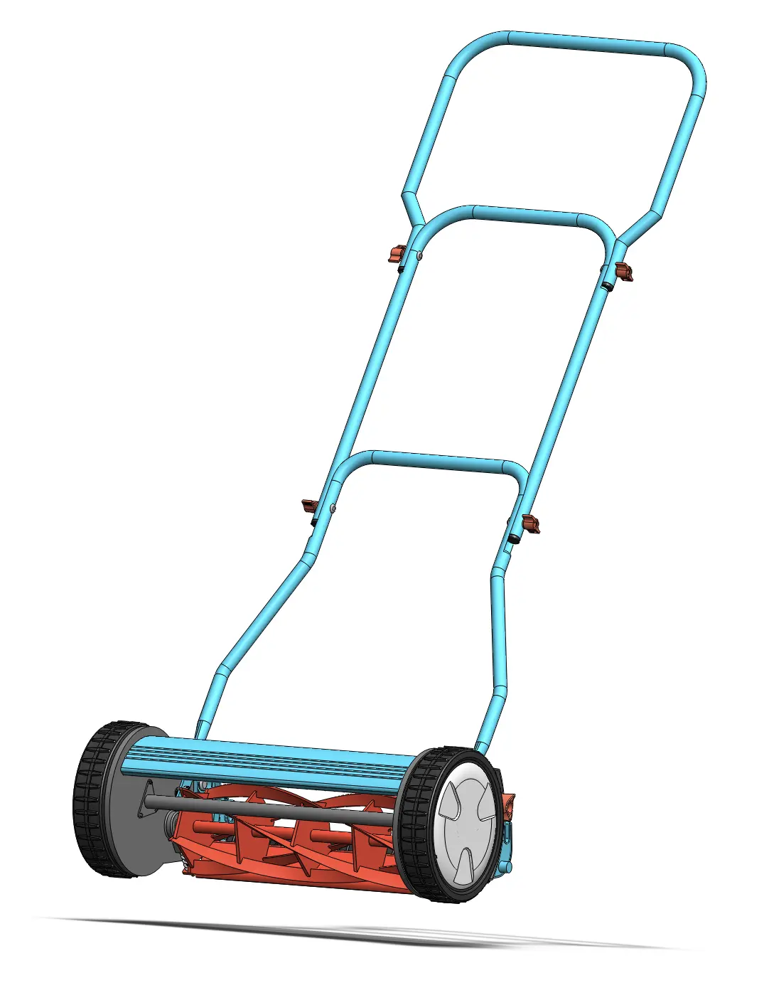
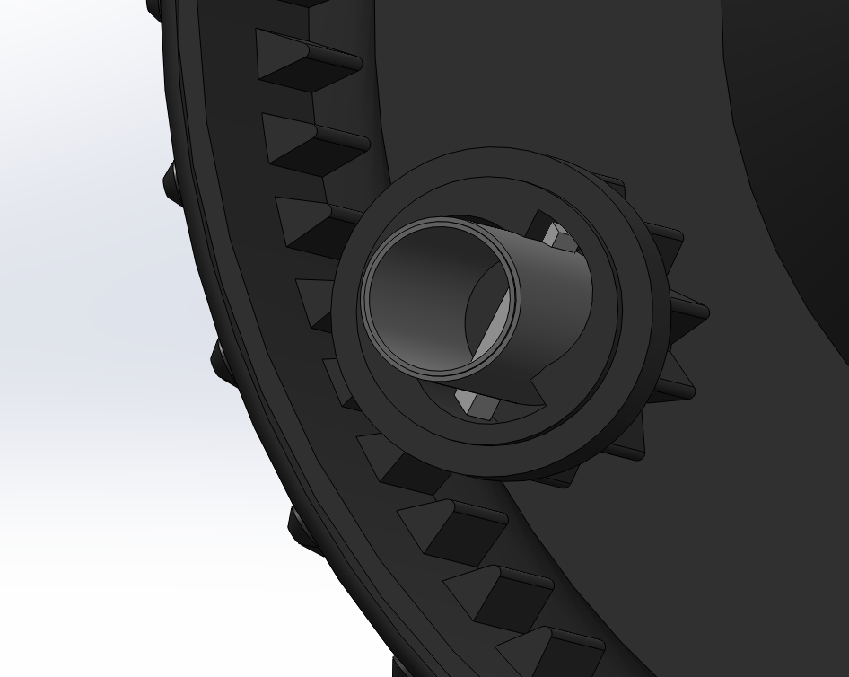
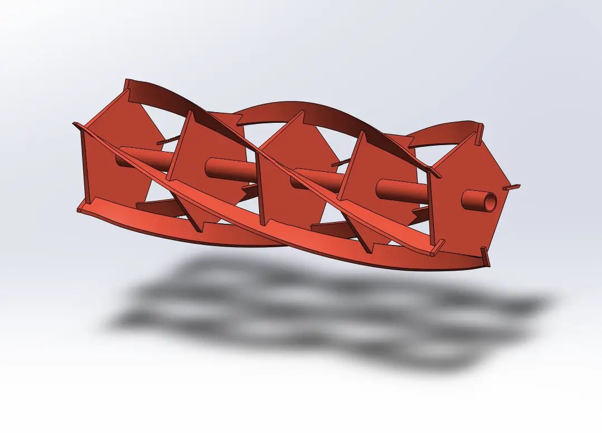

Ratchet Mechanism
This mechanism uses a toothed wheel and a central hub with a one-way clutch or ratchet system to engage rotation in the forward direction while allowing free movement backward.
In order to familiarize myself with all the tools and functions of Solidworks, I reconstructed a mechanical model of a lawnmower from a yard sale, deconstructing it to understand how the ratchet-clutch mechanism worked internally. Through this project, I was able to gain a grip of simple and complex tools in Solidworks by hands-on creating over 30 unique parts and 10 custom drawings.
SKILLS
3D Design
2D Drawings
TOOLS


This was a old model of a lawn mower that had always interested me. When driven forward, the blades rotate forward quickly, launching grass to the rear collection area. But when driven backwards, the blades don't move, allowing the user to move to different locations. How does this work?
I was looking for ways to practice CAD in preperation for bigger projects, so I choose to model this lawnmower and dissect it down to its individual components. First, I choose to divide the lawnmower into seperate systems to tackle each on its own.
This mechanism uses a toothed wheel and a central hub with a one-way clutch or ratchet system to engage rotation in the forward direction while allowing free movement backward.


Helical reel design with angled cutting edges and supports to provide a scissor-like cutting action.
This project really grew my Solidworks Experience through extensive practice with a variety of parts. This helped me become more comfortable with transitioning to other CAD software such as Onshape and allowed me to build unique projects!